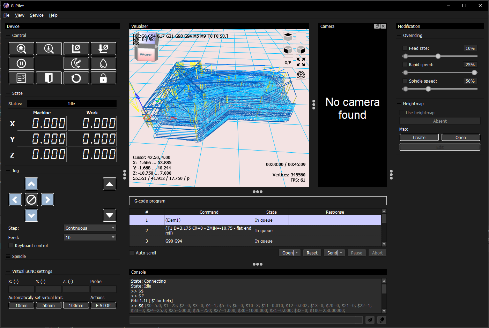
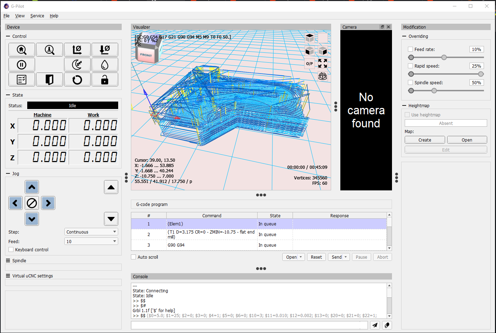
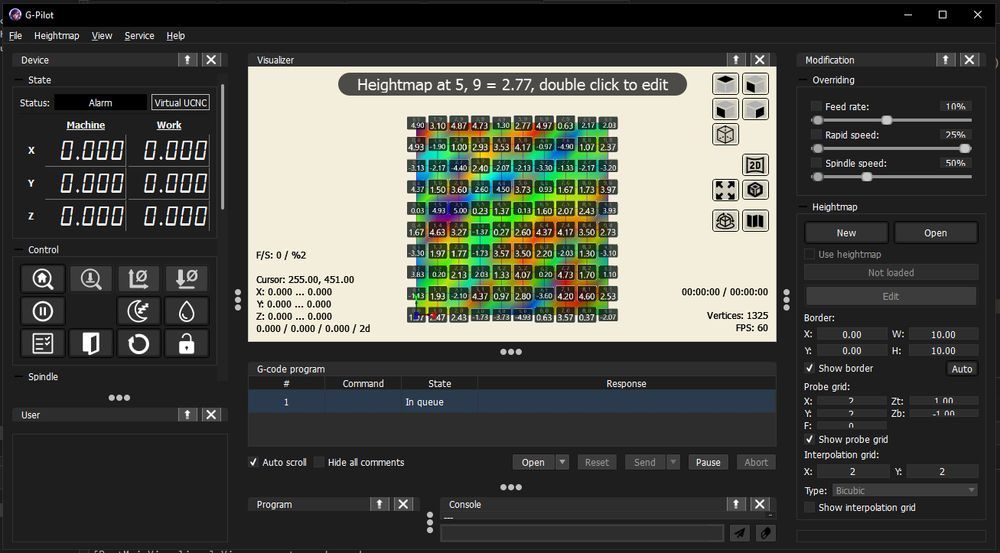
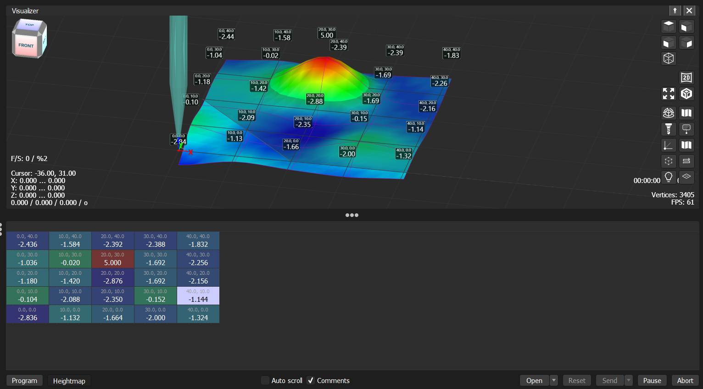

The interface you already know — rebuilt to be better in every way. Joystick support, heightmap, virtual machine mode, cleaner code, fewer bugs. A familiar tool taken seriously.
Dark and light theme, 3D visualizer, heightmap and camera view — all in one window.




A tool for CNC operators and hobbyists — from simple engravers to more complex 3-axis machines. Connects via USB/Serial or TCP/IP.
AstroCore grew out of the Candle experimental branch. The goal: bring the codebase into the modern era — cleaner architecture, new features, active maintenance, and fixes for long-standing issues that the original project never addressed.
Supported firmware: GRBL 1.1, uCNC, grblHAL, FluidNC. Feedback, bug reports and pull requests are welcome.
Download AstroCore and test it on your machine. Keep in mind it is still in early development — use with care.